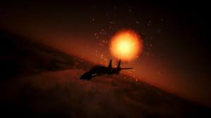
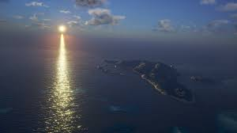
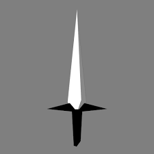
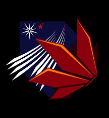
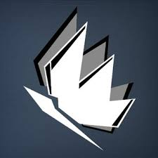
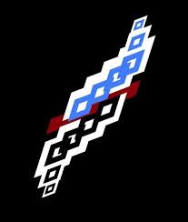
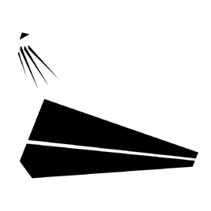
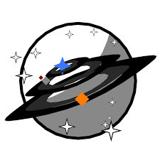
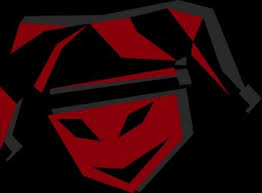

Imagem do Monarca depois de derrotar Escarlate 1 na última missão "Kings", ou Reis no português.

Imagem do Monarca engajando múltiplos esquadrões da Federação na missão "Guerra Fria".

Imagem do local da primeira missão do jogo, a missão "Bandeira Negra", onde o protagonista intercepta um ataque de mercenários contra um navio de cargo cheio de cordium da Federação chamada Meilynx.

Imagem do time do protagonista, o Time Hitman, que é composto por três pilotos mercenários, incluindo o protagonista Monarca.

Imagem do time antagonista, o Time Escarlate, que é o melhor time de mantedores da paz da Federação do Pacífico e o principal antagonista do jogo.

Imagem do protagonista, Monarca, o piloto mercenário habilidoso e experiente que é conhecido por sua coragem e habilidades de combate aéreo excepcionais.

Imagem do Hitman 2, o Diplomata, filho da dinastia política Kennedy. O segundo melhor piloto e rebelde da sua família.

Imagem do WSO de Monarca, o Prez, e a mecânica-chefe do time Hitman. Conhecida por sofrer com o estilo de pilotagem do Monarca e ainda sim ser brincalhona.

Imagem do AWACS do Time Hitman, "Galáxia", conhecido por ser o melhor AWACS do jogo e por ter uma personalidade forte e engraçada. Mas consegue ser sério se a situação ficar tensa pro time.

Imagem da Hitman 3, a Cômica, a melhor piloto do Time Hitman e uma das melhores pilotos do jogo. Era brincalhona no passado, mas agora é a mais séria do time.